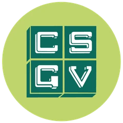
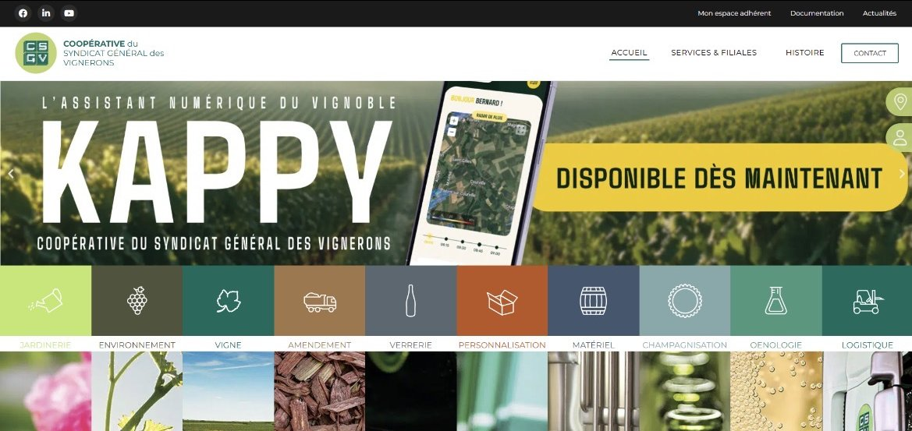
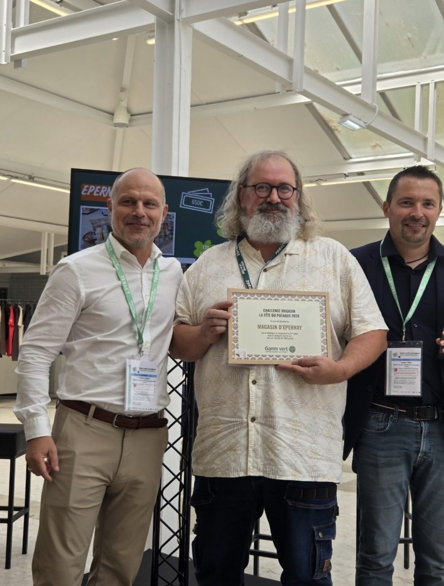
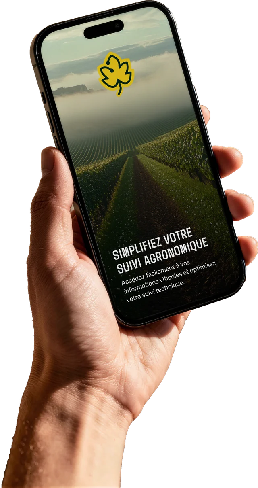

Photo · Vidéo · Réseaux sociaux
Axel Pionnier
Passionné par l'image depuis toujours, je crée des vidéos, des visuels et des affiches depuis plus de cinq ans, de la prise de vue jusqu'à la diffusion. Basé à Avize, j'ai envie de mettre ce savoir-faire au service d'une grande maison de Champagne.

Projet phare · CSGVcsgv.com, le site de la coopérative

Le site de la coopérative fondée en 1947, pensé pour deux publics : les vignerons adhérents et le grand public. Il présente l'ensemble des services et des filiales du groupe sous une même identité.
Plusieurs mois de travail. Je l'ai conçu de A à Z : la maquette et l'ensemble des contenus (textes, photos, articles, documents). Le développement a été réalisé par l'agence IMPAAKT à partir de ma maquette.
- ServicesTechnique et environnement, vigne, personnalisation, matériel et SAV, champagnisation
- FilialesLa Pastorale, Champagne Emballage, O2C, CSGV Transports
- AdhérentsEspace connecté, documentation, actualités, carte des magasins
Série d'affiches · CSGV
Les affiches des assemblées générales
- Brief
Donner envie aux vignerons adhérents de venir à l'assemblée générale de la coopérative.
- Idée
Détourner des affiches de films cultes avec le vocabulaire champenois : cochelet, muselets, parcelles, Vitis.
- Rôle
Tout, de A à Z : idée, réalisation, montage, direction artistique, impression et mise en place.
- Résultats
Une série de 13 affiches, conçues et installées de bout en bout.
Magazine · CSGV
Les couvertures de Champagne Informations
Chaque année, je choisis la direction artistique du magazine de la coopérative et je dessine ses couvertures.
2026Les mouvements artistiques
2025Le parcours d'une bouteille
Opération commerciale · Gamm Vert Épernay
Un jour, un légume
J'anime les opérations commerciales et les réseaux sociaux du Gamm Vert d'Épernay. Pour la Fête du Potager 2026, du 8 au 19 avril, nous avons lancé « Un jour, un légume » : un rendez-vous quotidien en vidéo et un jeu concours pour faire vivre l'opération en magasin et en ligne.
Le magasin a terminé sur le podium national, une reconnaissance saluée dans les actualités internes du réseau.

Réseaux sociaux · Kappy
L'assistant numérique du vignoble

Kappy est une application développée par la CSGV et commercialisée en 2026 auprès des vignerons, pour simplifier leur suivi agronomique.
Je modère son compte Instagram, @kappy_vigne.
↗Voir @kappy_vigneSélection
Travaux
Réseaux sociaux
En chiffres
Reels les plus vus · octobre 2026
- Viti Vini 2026, jour 1 : bienvenue au village CSGV5 884 vues
- Viti Vini 2026 : le village ferme ses portes4 875 vues
- Joyeux Champagne Day4 344 vues
Côté perso · Ma passion
La photographie
En dehors du travail, je photographie ce qui me fait voyager : lumières, paysages, lieux abandonnés. À valider
Parcours
Expériences
- 2021 — auj.
Chargé de communication · CSGV
Coopérative du Syndicat Général des Vignerons, Épernay · CDI. Vidéos promotionnelles et institutionnelles de la prise de vue au montage, affiches, site et intranet, communication print et TV sur 18 magasins, salons et événements. Animation des opérations commerciales et des réseaux du Gamm Vert d'Épernay.
- 2019 — 2021
Technicien réparateur · WeFix
Saint-Quentin · CDI. Réparation électronique, management d'une petite équipe en atelier, conseil client.
- 2017 — 2018
Community manager · AB Expérience
Amiens · alternance. Articles de blog, visuels digitaux, animation des réseaux sociaux.
- 2015 — 2017
Agent commercial · Régie Radio Régions
Lille · CDD. Prospection B2B et vente d'espace pour Virgin Radio.
Formation
- 2021 — 2023
Master Communication 360
ECS, Reims
- 2017 — 2018
Licence Créa-Tec', commerce et communication
- 2015 — 2017
BTS Négociation et relation client